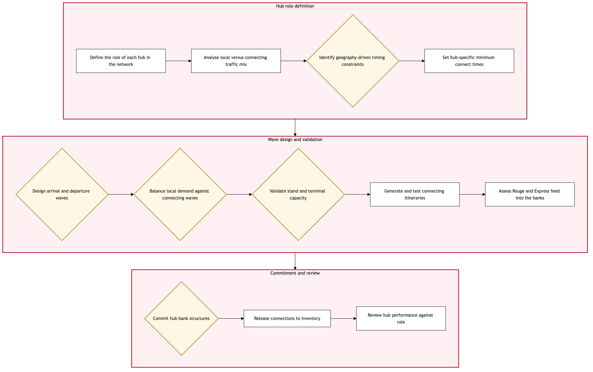

Updated 2026-08-18
Hub Bank Structure Design for YUL and YVR
Montreal and Vancouver operate as hubs with different roles from Toronto: Montreal carries transatlantic and francophone-market traffic, Vancouver carries transpacific traffic. Bank design for each sets wave structure appropriate to its geography and traffic mix.
Air Canada contextMontreal and Vancouver are not smaller copies of Toronto. Vancouver's transpacific departure wave is set by Asian arrival curfews and by the very long sectors involved, which compresses the feasible departure window. Montreal serves both transatlantic connecting traffic and a distinct francophone origin and destination market, which competes for the same peak timings. Treating either hub as a Toronto template produces a bank that fits neither the geography nor the traffic.
Process flow
Click to zoom

Process steps
▼
Phase 1 — Hub role definition
4 steps
| Step | Activity | Role | System | Input | Output | KPI | Dec | Exc | Pain point |
|---|---|---|---|---|---|---|---|---|---|
| 1.1 | Define the role of each hub in the network | Network Strategy Manager | NetLine/PlanB | Network strategy and traffic mix analysis | Documented hub role and traffic priority | Hub roles reviewed and confirmed each planning cycle | N | N | Hub roles drift over time without an explicit review, so the bank stops matching the traffic |
| 1.2 | Analyse local versus connecting traffic mix | Network Planning Analyst | Databricks LakehouseB | O and D traffic by hub | Local and connecting split by time of day | Traffic mix analysis completed before wave design | N | N | Montreal local francophone demand and transatlantic connecting demand want the same departure slots |
| 1.3 | Identify geography-driven timing constraints | Network Planning Analyst | NetLine/PlanB | Sector lengths and destination curfews | Feasible departure window by region | Timing constraints documented for 100 percent of long-haul regions | Y | N | Transpacific departure windows from Vancouver are tightly bounded by arrival curfews in Asia |
| 1.4 | Set hub-specific minimum connect times | Network Planning Analyst | Amadeus Altea InventoryA | Terminal configuration and border processing | Minimum connect time matrix per hub | Connect times validated against actual transfer performance annually | N | N | Applying Toronto connect standards to a differently configured terminal produces unachievable connections |
▼
Phase 2 — Wave design and validation
5 steps
| Step | Activity | Role | System | Input | Output | KPI | Dec | Exc | Pain point |
|---|---|---|---|---|---|---|---|---|---|
| 2.1 | Design arrival and departure waves | Schedule Planner | NetLine/PlanB | Traffic mix and timing constraints | Wave structure per hub | Wave structure defined for both hubs before schedule freeze | Y | N | A single long-haul departure wave leaves the rest of the day poorly utilised at a smaller hub |
| 2.2 | Balance local demand against connecting waves | Network Planning Analyst | PROS Revenue ManagementB | Local demand profile and wave structure | Balanced timing proposal | Local demand served within 30 minutes of preferred timing on 75 percent of routes | Y | N | Serving connecting waves well can push local departures to commercially poor times |
| 2.3 | Validate stand and terminal capacity | Schedule Planner | Airport Resource ManagementC | Wave structure and available infrastructure | Capacity-validated wave structure | Peak wave within stand capacity at both hubs at 100 percent | Y | N | Peak capacity at the secondary hubs is tighter than at Toronto relative to wave size |
| 2.4 | Generate and test connecting itineraries | Network Planning Analyst | NetLine/PlanB | Wave structure and connect time matrix | Validated connecting itinerary set per hub | Connecting itineraries validated for 100 percent of target markets | N | N | Cross-hub itineraries via two Air Canada hubs are generated but rarely tested for reliability |
| 2.5 | Assess Rouge and Express feed into the banks | Schedule Planner | Lufthansa Systems NetLineB | Regional feed schedule | Feed assessment against wave windows | Regional feed aligned to wave windows on 85 percent of connections | N | N | Express operator feed reliability is materially different from mainline and is not modelled separately |
▼
Phase 3 — Commitment and review
3 steps
| Step | Activity | Role | System | Input | Output | KPI | Dec | Exc | Pain point |
|---|---|---|---|---|---|---|---|---|---|
| 3.1 | Commit hub bank structures | Network Strategy Manager | NetLine/PlanB | Validated wave structures | Committed bank structures for both hubs | Bank structures committed before schedule freeze at 100 percent | Y | N | Committing both secondary hubs late compresses the Toronto bank design that depends on them |
| 3.2 | Release connections to inventory | Schedule Planner | Amadeus Altea InventoryA | Validated itinerary set | Sellable connections per hub | Sellable connections match the validated set at 100 percent | N | N | Connection construction rules are set once and not differentiated by hub reliability |
| 3.3 | Review hub performance against role | Network Planning Analyst | Databricks LakehouseB | In-service traffic and misconnect data | Hub performance review with structural findings | Hub review completed within 60 days of season end | N | N | Findings are produced after the next season is already frozen |
Swim lanes
Network Strategy Manager1.1 3.1
Network Planning Analyst1.2 1.3 1.4 2.2 2.4 3.3
Schedule Planner2.1 2.3 2.5 3.2
Systems touched
NetLine/PlanBDatabricks LakehouseBAmadeus Altea InventoryAPROS Revenue ManagementBAirport Resource ManagementCLufthansa Systems NetLineBStar Alliance InterlineAAmadeus Altea DCSA
Key performance indicators
- Peak wave within stand capacity at both hubs at 100 percent
- Regional feed aligned to wave windows on 85 percent of connections
- Local demand served within 30 minutes of preferred timing on 75 percent of routes
- Misconnect rate at secondary hubs below 4 percent
- Hub performance review completed within 60 days of season end
Risks and control points
- Applying a Toronto bank template to hubs whose geography and traffic mix differ materially
- Transpacific departure windows at Vancouver being over-constrained by destination curfews
- Montreal local francophone demand and transatlantic connecting demand contending for the same peak
- Express operator feed reliability degrading connections that were modelled on mainline performance
- Hub performance findings arriving after the next season has already been frozen
Air Canada Process Wiki — process and systems reference compiled from public sources
for IT Application Management and User Support pre-sales discovery.
Built 2026-08-18. Every system carries an evidence tier: tier C is an industry pattern and tier U is an open
question, and neither should be asserted as fact about Air Canada without confirmation in discovery.
Not affiliated with or endorsed by Air Canada. Air Canada, Aeroplan and Altitude are trademarks of Air Canada.